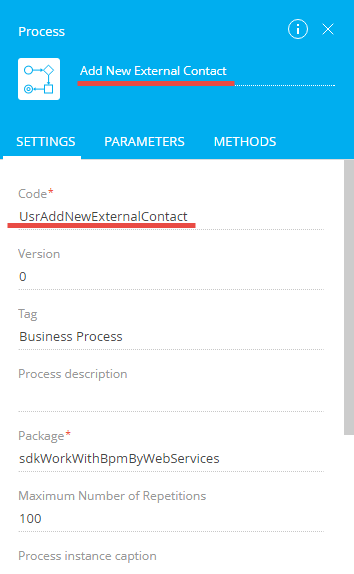
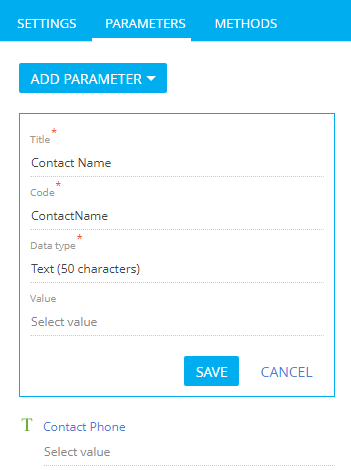

1. Создать процесс добавления контакта
- Создайте пользовательский пакет и установите его в качестве текущего.
- Перейдите в дизайнер процессов.
-
Заполните значения свойств бизнес-процесса:
- Название (Name) — "Add New External Contact".
- Код (Code) — "UsrAddNewExternalContact".
Для остальных свойств оставьте значения по умолчанию.
 -
Добавьте параметры бизнес-процесса.
С помощью параметров в процесс передаются реквизиты добавляемого контакта — имя и телефон.
Значения свойств параметра ContactName:
- Заголовок (Title) — "Имя контакта" ("Contact Name").
- Код (Code) — "ContactName".
- Тип данных (Data type) — "Текст (50 символов)" ("Text (50 characters)").
Значения свойств параметра ContactPhone:
- Заголовок (Title) — "Телефон контакта" ("Contact Phone").
- Код (Code) — "ContactPhone".
- Тип данных (Data type) — "Текст (50 символов)" ("Text (50 characters)").
 -
Добавьте элемент Задание-сценарий (ScriptTask).
Значения свойств элемента:
- Название (Name) — "Add contact".
- Код (Code) — "ScriptTaskAddContact".
-
Реализуйте логику добавления нового контакта.
Чтобы редактировать код сценария, дважды щелкните по элементу на диаграмме. На панели настройки элемента откроется окно для ввода и редактирования программного кода.
- После внесения изменений сохраните бизнес-процесс, нажав на кнопку Сохранить (Save) на панели инструментов дизайнера процессов.
2. Создать процесс чтения контактов
Бизнес-процесс, формирующий список всех контактов, также содержит один элемент Задание-сценарий (ScriptTask), в котором реализуется необходимая логика.
Значения свойств бизнес-процесса:
- Название (Name) — "Get All Contacts".
- Код (Code) — "UsrGetAllContacts".
Для остальных свойств оставьте значения по умолчанию.
Процесс UsrGetAllContacts содержит единственный параметр ContactList, через который процесс будет возвращать список всех контактов системы в виде JSON-объекта. Тип параметра — строка неограниченной длины.
Логику выборки контактов реализуйте в элементе процесса Задание-сценарий (ScriptTask).
Значения свойств элемента:
- Название (Name) — "Get all contacts".
- Код (Code) — "ScriptTaskGetAllContacts".
После внесения изменений сохраните и опубликуйте бизнес-процесс.
3. Запустить выполнение бизнес-процессов из строки навигации браузера
Поскольку вызов метода сервиса возможен с помощью GET-запроса, то для выполнения запуска бизнес-процесса можно использовать браузер.
Для запуска процесса создания нового контакта в строку навигации браузера введите URL:
После перехода по указанному URL, в приложении будет добавлен новый контакт.
Для запуска процесса чтения всех контактов в строку навигации браузера введите URL:
После выполнения перехода по указанному URL, в окне браузера будет отображен JSON-объект, содержащий коллекцию контактов.
4. Запустить выполнение бизнес-процессов из консольного приложения
Полностью исходный код консольного пользовательского приложения, предназначенного для запуска бизнес-процессов с помощью сервиса ProcessEngineService.svc, доступен на GitHub.
Чтобы запустить выполнение бизнес-процессов из консольного приложения:
- Выполните аутентификацию. Для этого предназначен сервис аутентификации AuthService.svc. Консольное приложение для выполнения аутентификации можно взять за основу для примера, приведенного ниже.
- Для формирования запросов к сервису ProcessEngineService.svc в исходный код класса Program добавьте строковое поле, содержащее базовый URL сервиса.
- Для выполнения запуска бизнес-процесса добавления контакта в исходный код класса Program добавьте метод GET.
- Добавьте метод запуска процесса чтения контактов.
- Вызов добавленных методов выполните в главном методе программы после успешной аутентификации.